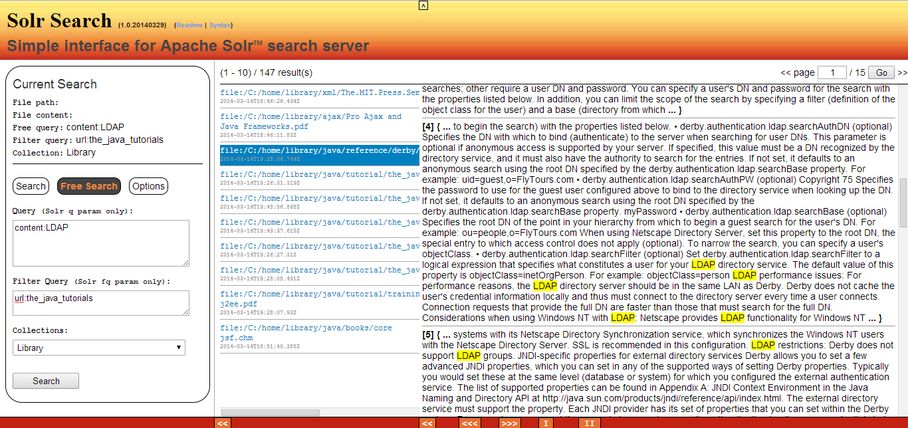

"Solr Search" Quick Overview
29-March-2014
By Ahmed Shawki (ashawki@hotmail.com)
1. It is expected that the schema of Nutch (1.8) (or a compatible one) is used by the Solr collection (which will be queried).
The basic search interface allows the user to query indexed documents by using criteria in "file path", "file contents" (for highlighting), and an optional OR- filter query in both "file path" and "file contents" fields.
2. The free search interface allows the user to enter free queries in both "q" and "fq" parameters of Solr.

3. The user can hide screen parts (header, search form, or documents list) one by one. Also, all parts can be made hidden in order to allow the user to focus on the highlighted search results:
4. Many options are available which allow customizing the user interface: including font sizes, font colors, number of documents per results page, number of highlighting snippets, highlighting html tags, etc.
5. Two help pages are accessible from the header:
"Readme" page contains the details about setting up the environment.
"Syntax" page contains a quick reference of Lucene/Solr Query Syntax.